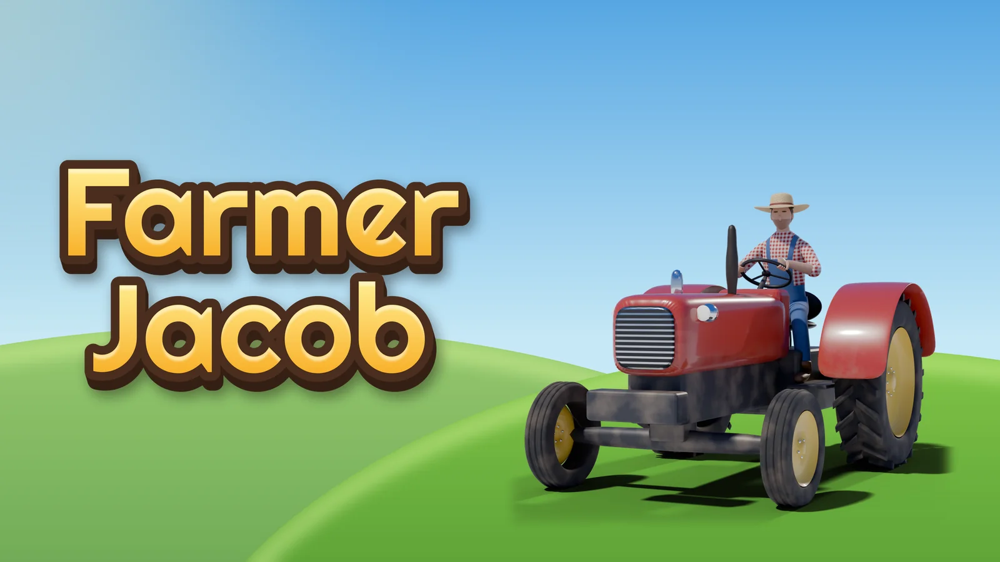
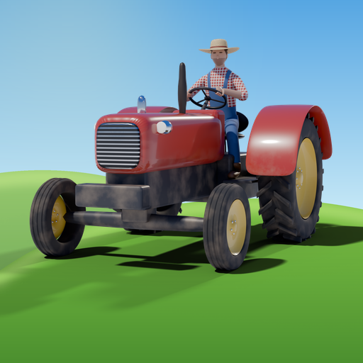

Farmer Jacob
Grow one avocado tree into a farm, a business, and a whole neighborhood.
About the game
Jacob has always dreamed of a farm of his own. One sunny morning he finds an empty field at the end of a quiet road, plants a single avocado tree, and gets to work.
Pick the fruit, sell it at your roadside stand, and put every coin back into the farm. Hire farm hands, climb onto the red tractor, plant a clementine grove, and open a packing house, a guacamole factory and a juice factory while the trucks queue up for your crates.
And when the farm is thriving, a real estate agent comes calling - and the fields where the trees stood start to rise into apartment towers and a street of private villas.
- Plant, pick and sell avocados and clementines
- Hire workers and upgrade Jacob to walk faster and carry more
- Drive the tractor and haul whole trailer loads
- Run a packing house, a guacamole factory and a juice factory
- Build houses for your workers and a farmhouse for Jacob
- Turn the farm into a neighborhood of towers and villas
Watch the intro
The story the game opens with: an empty field, one tree, and a farmer with a plan.
Every model in it - Jacob, his tractor, the avocado and clementine trees - is the game's own.
Privacy
Farmer Jacob has no accounts, no in-app purchases and no server of its own, and we collect nothing about you. Your farm and settings are kept on your device.
The game shows ads from Google AdMob, which collects your device's advertising identifier and similar data to serve them. In the European Economic Area, the United Kingdom and Switzerland the game asks for your consent before any ad is loaded, and you can change your answer at any time.